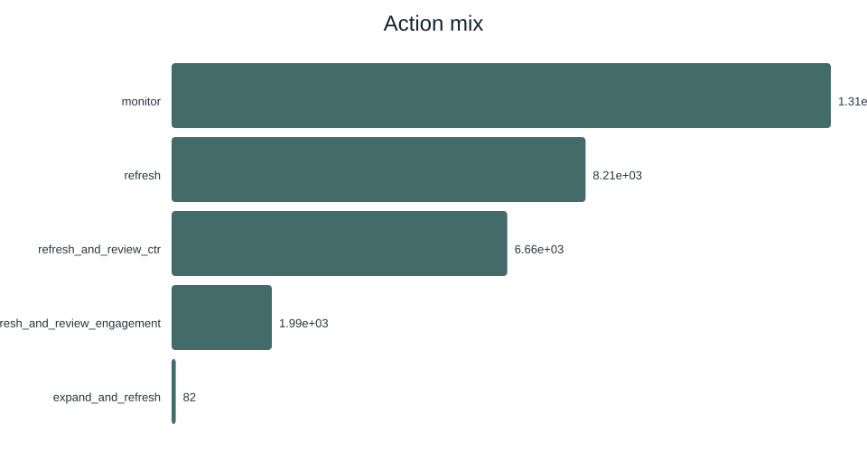
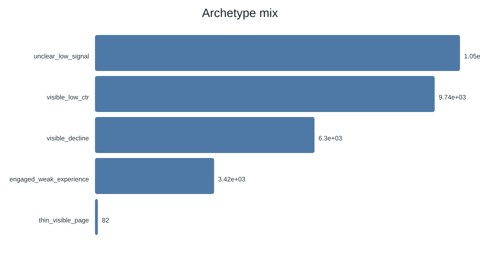

A small decision, made more honestly.
This paper asks whether observed search, engagement, and content signals can help rank pages for refresh review. It uses FlyRank's public-safe 30,000-row starter export, while documenting that the larger warehouse release exists but is not the source of these results. A leakage-aware feature set and random forest are evaluated against a transparent rule baseline on a client-grouped holdout. On this snapshot, the model measured average precision of 0.610 and Precision@50 of 0.680, compared with 0.468 and 0.240 for the baseline. The result supports directional, human-reviewed prioritization, not a causal claim that refreshing a page will improve traffic, rankings, or revenue.
The queue is the product.
Content teams often have more pages to inspect than time to inspect them. The useful decision is not “what does the model know?” but “which page should a person look at first, and why?”
This study compares a learned ranking with a transparent rule baseline. It keeps the final decision with an editor or SEO analyst and treats the model as a prioritization aid, not an automatic publishing system.
Public-safe by design.
The analysis uses content_refresh_anonymized.csv, the bundled 30,000-row starter export. Each row represents one pseudonymous content item with trailing 90-day search and engagement summaries plus content metadata. The broader FlyRank warehouse release includes daily performance, content, client, and query tables, but this paper does not claim to have trained on its approximately 79 million daily rows.
The label is is_declining_label = (trend_direction == "down"). IDs are used only for joins and client grouping. Label-derived fields, product decision flags, client names, domains, URLs, titles, and raw queries are excluded from the paper.
Validation is part of the result.
Numeric inputs cover demand, activity, age, position, CTR, engagement, scroll, AI traffic, and log-transformed volumes. Categorical inputs cover content type, intent, age, freshness, word-count, impression, and position tiers. The model comparison includes logistic regression, a shallow decision tree, and a random forest selected by Precision@50.
The recorded holdout is client-aware: held-out clients do not appear in training. The baseline is a transparent rules score evaluated on the same test rows. A leakage audit excludes trend_direction, trend_pct, content_id, client_id, and decision-derived product flags.
More useful ranking, still not a promise.
The random forest measured higher ranking performance than the rule baseline on the same client-grouped holdout. Precision@50 is the operational focus because the first 50 items are a plausible review batch; the base rate remains visible so the number is not read in isolation.
| Method | ROC AUC | Average precision | Precision@50 | Recall | F1 |
|---|---|---|---|---|---|
| Logistic regression | 0.700 | 0.522 | 0.400 | 0.567 | 0.566 |
| Decision tree | 0.742 | 0.575 | 0.580 | 0.716 | 0.634 |
| Random forest | 0.747 | 0.610 | 0.680 | 0.741 | 0.638 |
| Rule baseline | 0.627 | 0.468 | 0.240 | 0.189 | 0.274 |


What this paper refuses to claim.
- This is an observational ranking study on one public-safe snapshot.
- The decline label is a trend-derived proxy, not a direct business-value outcome.
- Client grouping tests unseen-client transfer, but future-time performance remains untested here.
- The flat starter export cannot fully prove strict feature-window timing.
- A queue score is not a quality verdict, expected revenue, or refresh-success probability.
- Any content change needs human review for facts, intent, accessibility, brand, and legal context.
A ranked action playbook.
The queue is designed to make the next review meeting sharper. Each item carries a score, confidence label, suggested action, and reason codes that a reviewer can challenge.
Start with visible decline
Inspect high-score pages with demand plus a down trend or elevated model risk. Confirm current intent and factual freshness before deciding whether a refresh is warranted.
Review low CTR separately
For pages with impressions and visible position, check whether title and snippet alignment is a plausible editorial issue before changing page copy.
Inspect the experience
Where sessions coexist with weak engagement or scroll signals, inspect usefulness, readability, navigation, and page structure.
Expand only with evidence
Use thin-page signals to prompt a coverage review. Do not add unsupported text merely because the queue says expand and refresh.
Monitor the uncertain tail
Batch lower-confidence items and revisit them after the next measured snapshot. The queue is a triage aid, not an instruction to automate.
Receipts, not theatre.
The complete workflow is available in the repository. Start with the notebooks, then rerun the scripts with the fixed random state where training and client holdout selection use randomness.
Built with a real dataset.
Built on the FlyRank ML Internship dataset. The dataset is public-safe and pseudonymized. This paper contains no client names, domains, URLs, private queries, or credentials.